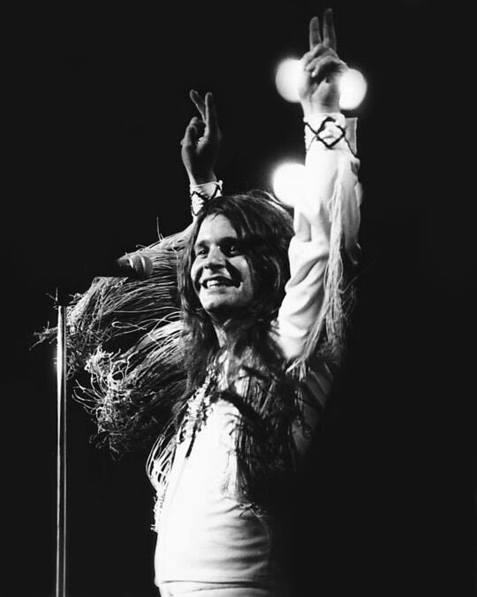
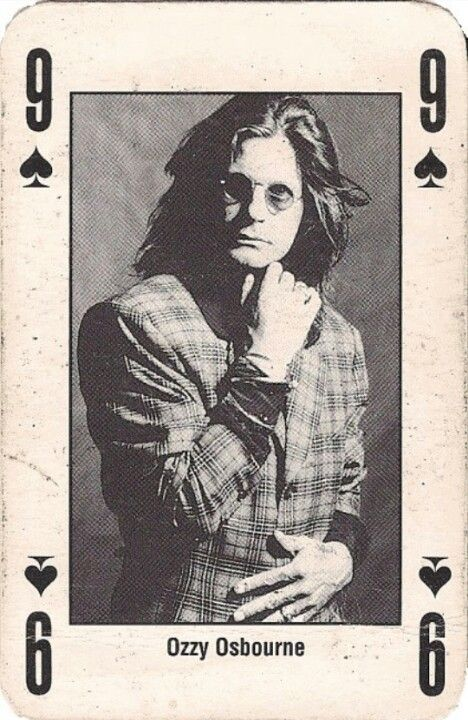

BLACK SABBATH
Bienvenue dans l'univers de Black Sabbath, groupe britannique considéré comme l'un des fondateurs du heavy metal.

OZZY OSBOURNE
Chanteur emblématique de Black Sabbath, Ozzy Osbourne a marqué l'histoire du rock et du heavy metal par sa voix et son univers musical unique.
LEUR HISTOIRE
Formé en 1968 à Birmingham, Black Sabbath a révolutionné la musique avec ses riffs lourds, ses sonorités sombres et son univers mystérieux. Le groupe a profondément influencé plusieurs générations de musiciens.

UNE LEGENDE DU ROCK
Entre performances mythiques, albums incontournables et concerts légendaires, Black Sabbath reste une référence majeure de la musique metal.

LEUR HERITAGE
Black Sabbath a ouvert la voie à de nombreux groupes et continue d'inspirer la scène metal internationale.